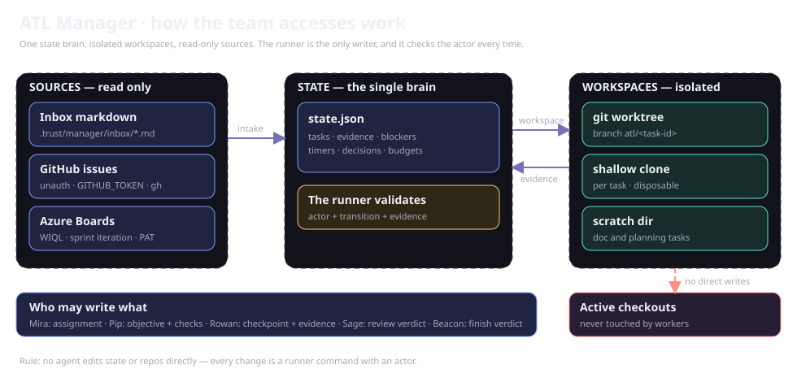

Diagram library
Use a focused model to answer a question, then follow the implementing source for exact policy and fields. Mermaid lives in the corresponding Markdown and renders with a local bundle.
Choose a model
| Question | Current model |
|---|---|
| How does work flow? | Overview |
| Which boundary owns a step? | Architecture |
| Which resources reference each other? | Resource model |
| What supports trust and learning? | Evidence relationships |
| How do agents hand off? | Team sequence |
| What is the conceptual lifecycle? | Tasks and queues |
Read the scope
Lifecycle models summarize workflow rather than literal status values. ER models describe JSON/file relationships, not database foreign keys. Verify identity, revision, actor permissions, and evidence in source before implementing changes.
Existing visual sources
docs/diagrams/ retains SVGs, Excalidraw, and earlier interface captures, preserving their URLs. Current Control Plane screenshots live under docs/assets/screenshots/; provenance is in the refresh record.

Update a model
Edit its Markdown source, trace relationships to modules, run npm run docs:build and npm run docs:check, then inspect desktop/mobile rendering. Split dense models into focused diagrams and include explanatory prose that works without an image.